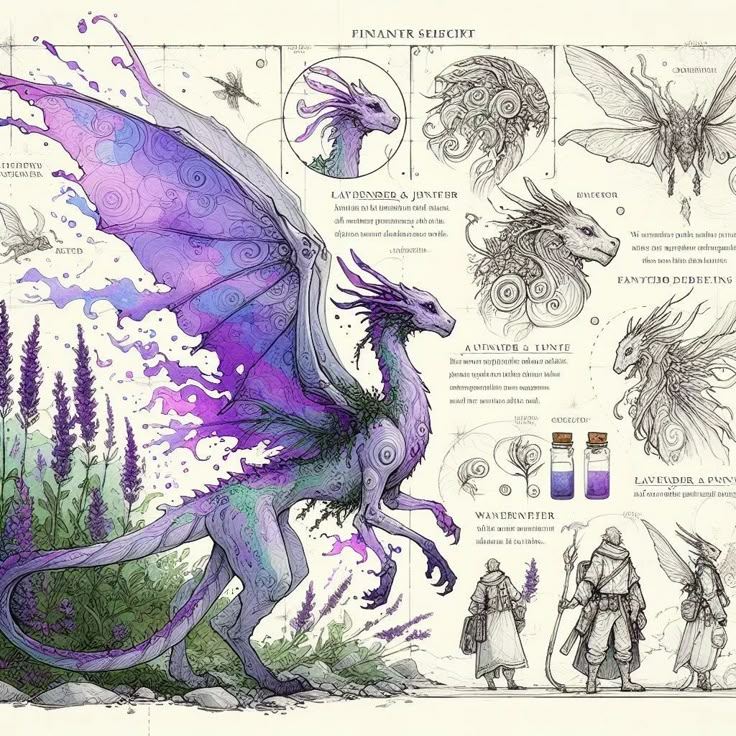

Bestiário de Magix – Criaturas Lendárias
Período: 1 a 14 de Julho de 2026
Local: Salão Principal da Biblioteca
Curadoria: Professor Palladium e pesquisadores do Arquivo Digital
Uma viagem pelo mundo das criaturas mágicas que habitam a Dimensão Mágica! A exposição reúne ilustrações originais de bestiários antigos, modelos animados (criados com magia de projeção) e registros de avistamentos de criaturas raras como dragões de Dominó, fênix de Solaria e sereias de Andros.
Destaques:
- Réplica em tamanho real de um filhote de dragão (interativa!)
- Seção especial: Criaturas Extintas – O que perdemos para sempre
- Oficina para crianças: Desenhe sua própria criatura mágica
Inscrição para oficina: Necessária (vagas limitadas) pelo formulário na página contato.